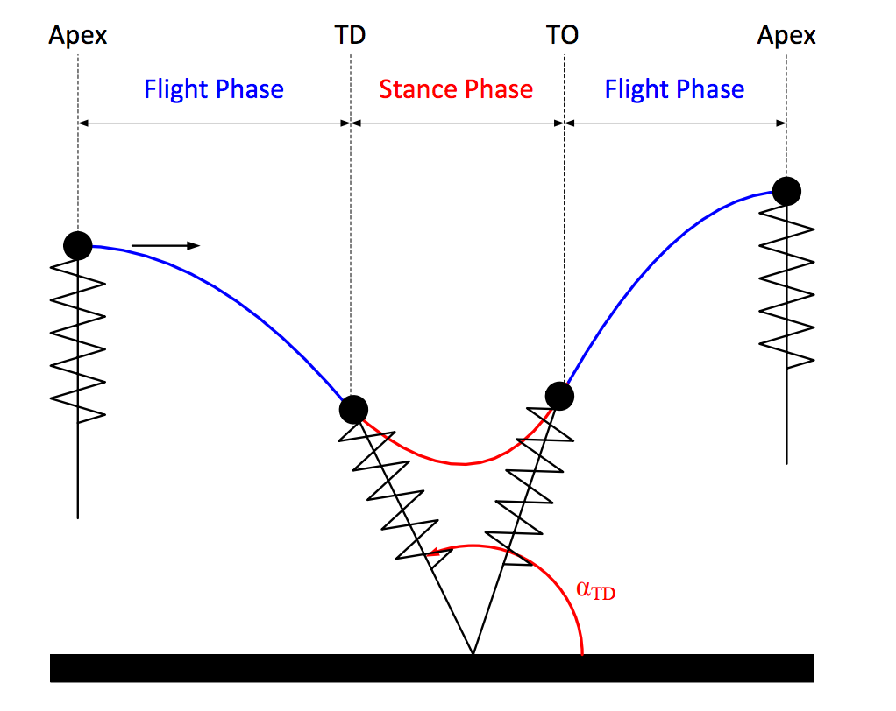
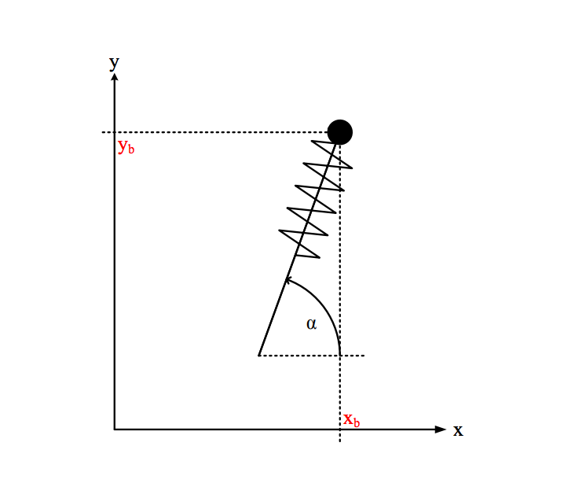
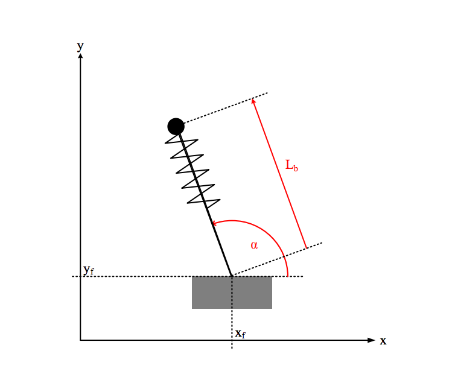
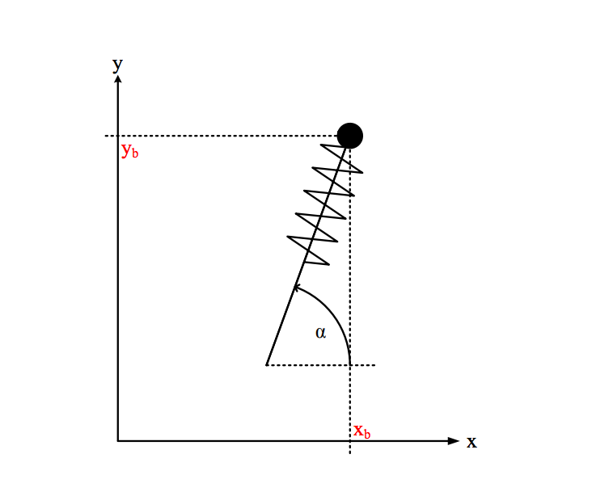
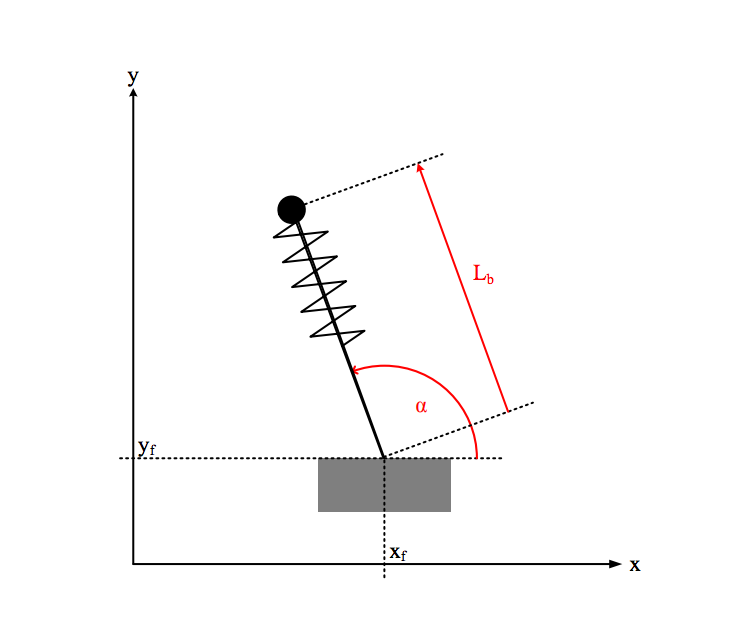
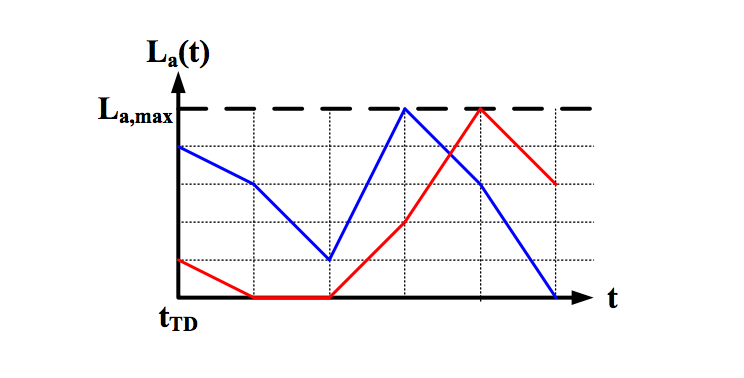
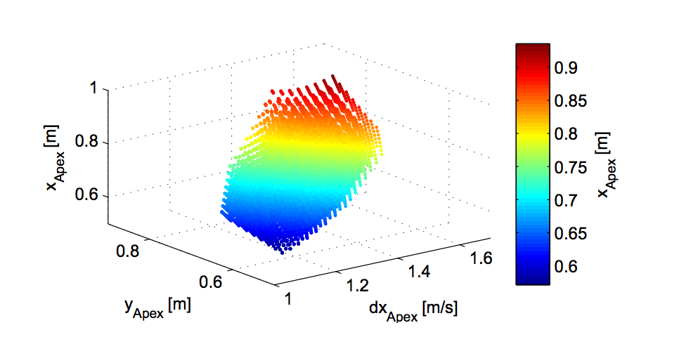
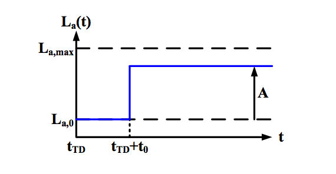
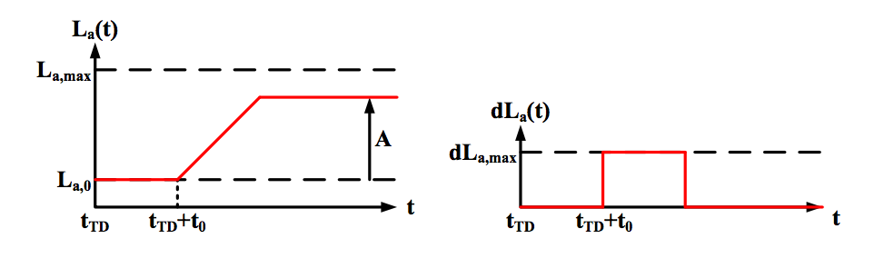

Control of a planar, one legged hopping robot model on rough terrain
M. Rutshmann. (2012). Control of a planar, one legged hopping robot model on rough terrain. Master Thesis, University of California Santa Barbara.Dynamics
Single leg hoppers are hybrid systems with two phases, stance and flight. Terms and State Description
\( \alpha_{TD} \) is the angle of the leg when the robot enters stance phase.The apex map describes the position and horizontal velocity of the robot when it is at the apex of flight and has zero vertical velocity. \[ apex = [ x_{apex}, y_{apex}, \dot{x}_{apex} ]' \] The apex return map is the map between two apicies. \[ z_{apex} = y_{apex} + \frac{E_{apex,kin}}{gm} \] \[ z_{apex} = y_{apex} + \frac{\dot{x}^2_{apex}}{2g} \]
\[ E_{apex,kin} = \frac{1}{2}m\dot{x}^2_{apex} \] \[ E_{apex} = mgz_{apex} \]
Conservative SLIP Model
The useful parameters in defining the spring loaded inverse pendulum model are the different lengths and masses of the system (pictured). During flight, the only force acting on the hopper is gravity. We use a cartesian coordinate system.
\[ \ddot{x} = 0 \]
\[ \ddot{y} = -g \]

\[ x_b(t) = x_{b,0} + dx_{b,0}(t-t_0) \]
\[ y_b(t) = y_{b,0} + dy_{b,0}(t-t_0) - \frac{1}{2}g(t-t_0)^2 \]
Assuming that the leg length doesn't change during flight, the position of the foot \([ x_f, y_f ]\) is given by
\[ x_f(t) = x_b(t) - cos(\alpha(t))L_0 \]
\[ y_f(t) = y_b(t) - sin(\alpha(t))L_0 \]
During stance, the foot \([ x_f, y_f ]\) is assumed to stick to the ground. We use a polar coordinate system.

\[ \ddot{L}_b = -\frac{k}{m}(L_b - L_f - L_{k0}) - g sin(\alpha) + L_b\dot{\alpha}^2 \]
\[ \ddot{\alpha} = \frac{-2\dot{L}_b\dot{\alpha}-g cos(\alpha)}{L_b} \]
Derivatives are ADD DERIVATIVES
During flight, the only force acting on the hopper is gravity. We use a cartesian coordinate system.
\[ \ddot{x} = 0 \]
\[ \ddot{y} = -g \]

\[ x_b(t) = x_{b,0} + dx_{b,0}(t-t_0) \]
\[ y_b(t) = y_{b,0} + dy_{b,0}(t-t_0) - \frac{1}{2}g(t-t_0)^2 \]
Assuming that the leg length doesn't change during flight, the position of the foot \([ x_f, y_f ]\) is given by
\[ x_f(t) = x_b(t) - cos(\alpha(t))L_0 \]
\[ y_f(t) = y_b(t) - sin(\alpha(t))L_0 \]
During stance, the foot \([ x_f, y_f ]\) is assumed to stick to the ground. We use a polar coordinate system.

\[ \ddot{L}_b = -\frac{k}{m}(L_b - L_f - L_{k0}) - g sin(\alpha) + L_b\dot{\alpha}^2 \]
\[ \ddot{\alpha} = \frac{-2\dot{L}_b\dot{\alpha}-g cos(\alpha)}{L_b} \]
Derivatives are ADD DERIVATIVESNo closed solution exists for the system of equations, so the use of apprixmation is necessary.
During touch down we convert from cartesian to polar coordinates. \( L_b \) is equal to \( L_0 \) at touch down and \( \alpha_{TD} \) is the touch down angle. \[ \dot{\alpha} = \frac{-sin(\alpha_{TD})\dot{x}_b + cos(\alpha_{TD})\dot{y}_b}{L_0} \] \[ \dot{L}_b = cos(\alpha_{TD})\dot{x}_b + sin(\alpha_{TD}) \dot{y}_b \] During Take off, the transition to flight dynamics occurs when the leg reaches its fully extended length. We transform back to cartesian coordinates. \[ x_{b,TO} = x_f + cos(\alpha_{TO}) L_0 \] \[ y_{b,TO} = y_f + sin(\alpha_{TO}) L_0 \] \[ \dot{x}_{b,TO} = cos(\alpha_{TO}) \dot{L}_{b,TO} - sin(\alpha_{TO}) \dot{\alpha}_{TO} L_0\] \[ \dot{y}_{b,TO} = sin(\alpha_{TO}) \dot{L}_{b,TO} - cos(\alpha_{TO}) \dot{\alpha}_{TO} L_0 \]
Failure Conditions
- Bottoming out of spring: if spring length = 0, step fails. This condition limits step height.
- Negative vertical takeoff speed
- Apex height too small: if the apex height is not higher than the leg, it is not reachable.
Actuators
Actuators allow for the addition and removal of energy from the system. The leg is actuated by a rotational motor and a ball screw. The motor can turn the screw at \(15800rpm\), the screw has a pitch of \(0.005m\). The actuator setup can change the length of the leg at \( 1.3\frac{m}{s} \). We can set the maximum to \( 1\frac{m}{s} \). We impose an upper limit on actuator length of \(0.07m\) in order to avoid bottoming out the spring during normal hopping behaviour. We also impose a maximum actuator acceleration of \(30\frac{m}{s^2} \) based on \[ \ddot{L}_a = \frac{k(L_k-L_{k0} + J_a N_a I_a}{J_a N^2_a} \] and a maximum current of \( I_a = 20A \)Stance time depends on \( \omega \), the natural frequency of the spring and is given by \[ T_s = \frac{\pi}{\omega} \] The actuator moves linearly between \(L_a[i]\) and \(L_a[i+1]\) over equally spaced time increments \(t[i]\) and \(t[i+1]\) which occur between \( t[0]=0 \) and \( t[n-1] = T_s \).  Times given by \[ t[i] = \frac{i}{n-1}T_s, \ \ \forall i \in \{0,1,...,n-1\} \] and actuator lengths given by \[ L_a[i] = \frac{j}{m-1}*L_{a,max}, \ \ \forall m \in \{0,1,...,m-1\} \] It is observed that actuator influence can only produce states on a surface in \( y_{apex}, dx_{apex}, x_{apex} \) space. In reality, the surface has some small thickness, but it is not significant. Based on this fact, two actuator parameters are chosen that allow for maximum flexibility on the surface.  Single step motions are actuator length changes some time delay after touchdown. The chosen actuator parameters are amplitude and time delay, \(A\) and \(t_0\) respectively. Time delay is upper bounded by the total stance time \(T_s\). The initial length of the actuator is considered to be fixed at \(L_{a,0} = 0.0165m\). This value was chosen because it allows the actuator to add and remove a similar amount of energy from the system.
Three kinds of single step motions are analyzed.
Unit Single Step  A single step at \(t_{TD} + t_0\) from \(L_{a,0}\) to \(A\), limited by \[ L_{a,min} - L_{a,0} \leq A \leq L_{a,max} - L_{a,0} \] This step profile is unrealistic because it doesn't take into account actuator speed limit.
Linear Single Step
 A linear transition between \(L_{a,0}\) and \(A\) beginning at time \(t_{TD}+t_0\) moving at speed \(dL_{max}\). This step profile respects the actuator speed limit. The motion ends either when \(A\) is reached or when the stance phase ends. The values for \(A\) are constrained in the same way as in the unit single step. This profile does not take into account the actuator acceleration limit.
Accelerated Single Step
 A transition between \(L_{a,0}\) and \(A\) which respects the actuator velocity and acceleration limits. At time \(t_{TD}\) the actuator beings to accelerate at \(ddL_{a,max}\) and decelerates as actuator position nears \(A\). \(A\) is bounded as in the unit single step.
A transition between \(L_{a,0}\) and \(A\) which respects the actuator velocity and acceleration limits. At time \(t_{TD}\) the actuator beings to accelerate at \(ddL_{a,max}\) and decelerates as actuator position nears \(A\). \(A\) is bounded as in the unit single step.
Dead Beat Control
Touch down angle is considered to be fixed. We define a function \(f\) which returns the next \( y_{apex} \) and \( \dot{x}_{apex} \) values, called \( y_{apex}[n+1] \) and \( \dot{x}_{apex}[n+1] \). \[ \begin{bmatrix}y_{apex}[n+1] \\ \dot{x}_{apex}[n+1]\end{bmatrix} = f( y_{apex}[n], \dot{x}_{apex}[n], \alpha_{TD}[n], A[n], t_0[n])\] We then optimize over actuator motion and other actuator variables. \[ \underset{A[n],t_0[n]}{\text{minimize}} ||f(\dot{x}_{TD}[n],\dot{y}_{TD}[n], \alpha_{TD}[n], t_0[n]) - \begin{bmatrix}y_{apex,d}\\\dot{x}_{apex,d}\end{bmatrix}||_2^2\] It is recommended that the optimization is run from multiple starting points in order to avoid choosing local minima.May 26, 2017
Sam Ingersoll
sources:
https://www.ece.ucsb.edu/~katiebyl/papers/Rutschmann_MSThesis.pdf